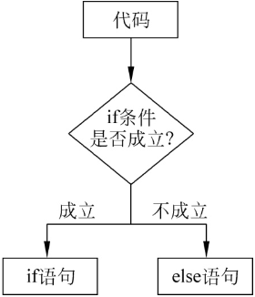
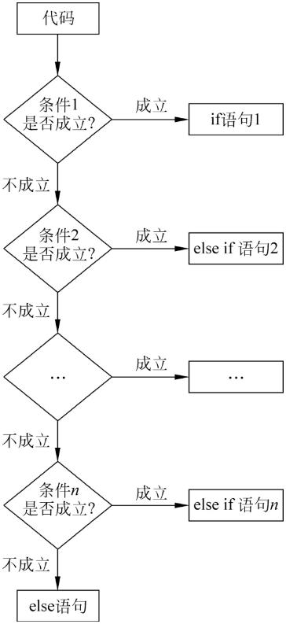

首页 > 编程笔记
JS if else用法详解
在 JavaScript 中，if...else属于最基本的条件语句，用于根据条件执行不同的代码，执行过程如图1所示。
if...else 的语法如下：
其中用于判断条件的表达式的结果不必是布尔类型的 true 和 false，可以是逻辑意义上的真值或假值，例如 null、undefined、"" 等假值，或除这些假值以外的真值。
下方示例展示了if...else条件语句的使用方法，代码如下：
if 条件中也可以使用运算符来组合成复杂的表达式，例如使用 if（a>5&&a<=8）。
另外，由于上方代码中的if和else代码块中的语句都只有一行，所以在这种情况可以省略大括号，改成下方代码所示的结构，代码如下：
另外，如果只想在条件为 true 时执行某段代码，而不管条件为 false 的情况，则 else 语句块也可以省略，这样当条件为假时，则不会执行任何代码，代码如下：
if...else 语句块中也可以嵌套其他流程控制语句，可以在其中再次使用 if...else 语句，代码如下：
要注意的是 else 语句块对应的是最外层的 if，在判断 a>5 的时候，就知道它不会被执行了。
if 中的条件也可以是由多种运算符组合成的复杂表达式，代码如下：
它的语法结构如下：
现在来看一个 if...else if...else 语句的例子，代码如下：

图1：if...else执行过程
图1：if...else执行过程
if...else 的语法如下：
if(条件){
语句1;
}else{
语句2;
}
其中用于判断条件的表达式的结果不必是布尔类型的 true 和 false，可以是逻辑意义上的真值或假值，例如 null、undefined、"" 等假值，或除这些假值以外的真值。
下方示例展示了if...else条件语句的使用方法，代码如下：
let a=5;
if(a>5){
console.log(＂a大于5＂);
}else{
console.log(＂a小于或等于5＂);
}
代码的输出结果为“a小于或等于5”。这段代码中首先定义了变量 a，其值为 5，使用 if 条件判断如果 a 大于 5，则输出 a 大于 5，否则输出 a 小于或等于 5，这里明显 a 是不大于 5 的，所以输出了 a 小于或等于 5。if 条件中也可以使用运算符来组合成复杂的表达式，例如使用 if（a>5&&a<=8）。
另外，由于上方代码中的if和else代码块中的语句都只有一行，所以在这种情况可以省略大括号，改成下方代码所示的结构，代码如下：
let a=5; if(a>5)console.log(＂a大于5＂); else console.log(＂a小于或等于5＂);一般不建议省略大括号，因为这样的代码明显不如有大括号的代码容易阅读。
另外，如果只想在条件为 true 时执行某段代码，而不管条件为 false 的情况，则 else 语句块也可以省略，这样当条件为假时，则不会执行任何代码，代码如下：
let a=5;
if(a>5){
console.log(＂a大于5＂);
}
//if条件判断为false,无任何输出
当条件表达式的结果为非布尔类型时，会根据逻辑意义的真假值进行判断，代码如下：
let a=＂＂;
if(a){
console.log(＂a有值＂);
}else{
console.log(＂a无值＂);
}
输出结果为＂a无值＂。因为这里 a 的值为空白字符串，是假值，所以程序会执行 else 代码块里的语句。if...else 语句块中也可以嵌套其他流程控制语句，可以在其中再次使用 if...else 语句，代码如下：
let a= 10;
if(a>5){
if(a>8){
console.log(＂a大于8＂);
}
}else{
console.log(＂a小于或等于5＂);
}
输出结果为＂a大于8＂，因为if条件 a>5 成立，程序进入 if 语句块，继续判断 a>8，此条件也是成立的，所以会打印出 a 大于 8，剩下的代码就不会再执行了。要注意的是 else 语句块对应的是最外层的 if，在判断 a>5 的时候，就知道它不会被执行了。
if 中的条件也可以是由多种运算符组合成的复杂表达式，代码如下：
if(condition1 && condition2 || condition3){
//结果为true时要执行的代码
}
if...else if...else语句
if...else 适合用于判断非真即假的情况，如果还有第3种甚至更多种情况，则可以使用 if...else if...else 语句，它比 if...else 多了一个 else if 关键字，用于执行其他成立的条件下的代码块，它的执行过程如图2所示。

图2：if...else if...else执行过程
图2：if...else if...else执行过程
它的语法结构如下：
if(条件1){
语句1;
}else if(条件2){
语句2;
}else if(条件3){
语句3;
}else{
语句4;
}
现在来看一个 if...else if...else 语句的例子，代码如下：
let a= 10;
if(a>15){
console.log(＂a大于 15＂);
}else if(a===10){
console.log(＂a等于 10＂);
}else{
console.log(＂a小于或等于15＂);
}
输出结果为＂a等于10＂。这个例子中，变量 a 的值为 10，if 中的条件 a>15 不成立，那么接着判断 else if 中的条件 a===10，结果是成立的，则执行它里边的代码并打印出 a 等于 10，而 else 语句则不会被执行了。关注公众号「站长严长生」，在手机上阅读所有教程，随时随地都能学习。内含一款搜索神器，免费下载全网书籍和视频。

微信扫码关注公众号